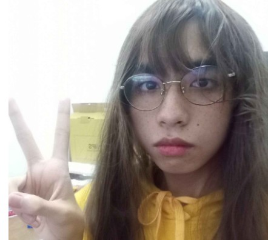

About Me

Hi! My name is Emi. 🏳️⚧️ I'm a BAMS student at UPOU, a hobby artist, as well as a budding game developer. I'm an avid reader and I love watching shows. Ask me about ASOIAF lore!
Things I Love
Media
- A Song of Ice and Fire
- Project Moon Games (Lobotomy Corporation, Library of Ruina, Limbus Company)
- Works of Osamu Dazai
- Works of Ryuunosuke Akutagawa
- Mobile Suit Gundam
- Heaven Will Be Mine
- Yume Nikki
- Analog Horror/Internet Horror
- Godspeed You, Black Emperor!
- Silver Mt. Zion
Hobbies
- Reading
- Drawing
- Writing
- Watching shows
- Playing indie games
- Building model kits
Passion Projects
The Yakisoba Experience
One of my biggest passion projects is my webseries known as The Yakisoba Experience; of which I'm currently developing a game for set in the same universe! It's about a rat girl exploring a surreal and dream-like liminal reality while dealing with manifestations of her own shortcomings and problems. Please take a peek! https://youtu.be/KOo7oLrevWs?si=5dLFQkQchKD5hqwA